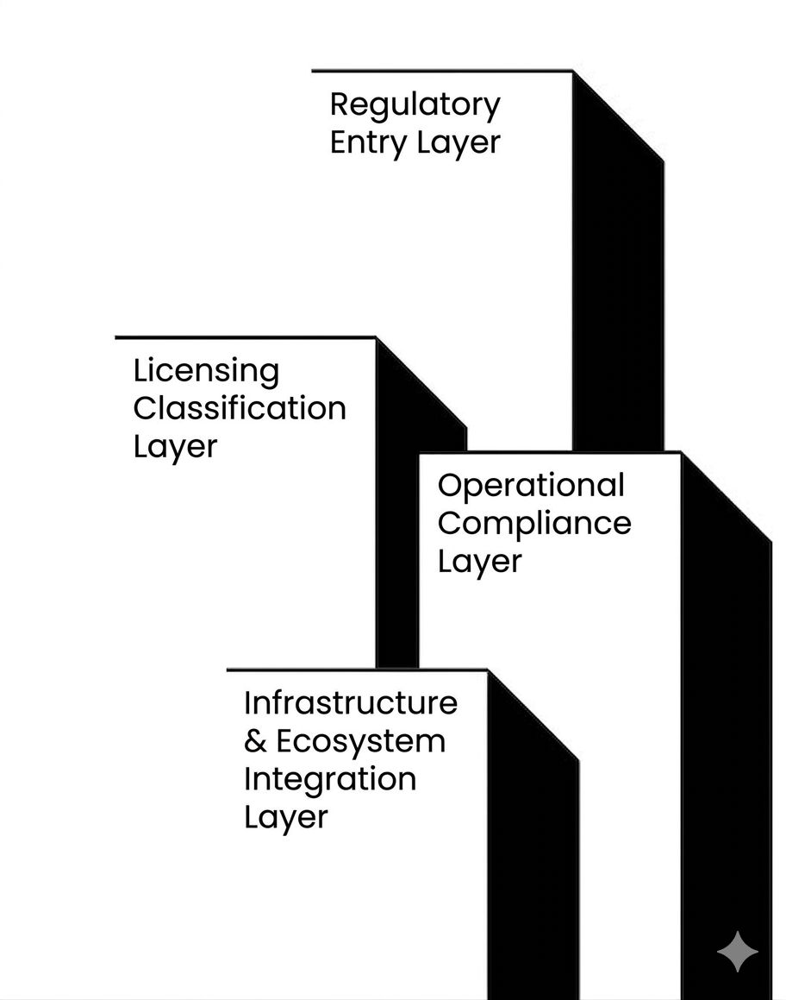
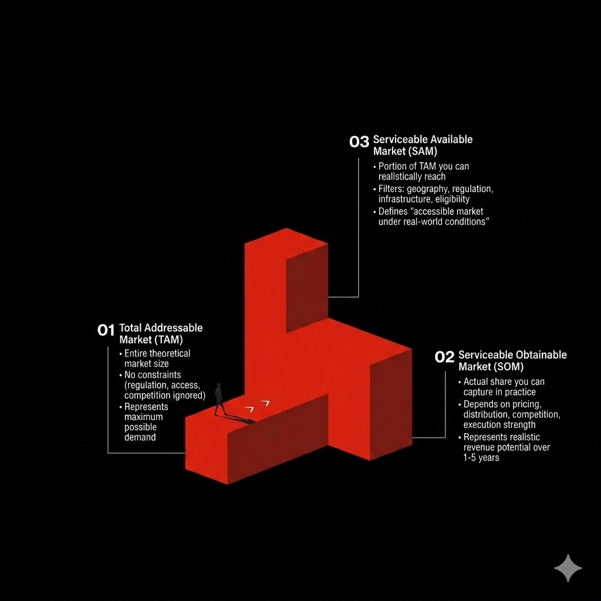

Our Approach
Northmanger works across five core intelligence areas — each one addressing a specific failure point in the EU–Africa fintech expansion process. Together, they form a complete map of the corridor and everything that determines whether an operator succeeds or burns capital learning the hard way.

Regulatory Architecture & Licensing Intelligence
Most fintech expansions fail before the product is live — not because the product is wrong, but because the operator underestimated the regulatory timeline, the capital requirement, or the operational constraints of the licence framework they chose. We map every material pathway across the corridor so you enter with clarity, not assumptions.
FCA EMI Authorisation (UK)
Full mapping of the UK Electronic Money Institution pathway — capital requirements, application timeline, operational obligations, and common failure points.
Bank of Lithuania EMI (EU Passporting)
The fastest route to EU-wide coverage. We model the full cost and timeline of Lithuanian EMI authorisation with passporting across all 27 EU member states.
CBN PSP & MMO Frameworks (Nigeria)
Nigeria's payment licensing landscape is layered and frequently updated. We track CBN PSP and Mobile Money Operator requirements including the NGN 2B MMO capital threshold.
CBK PSP (Kenya) & FSCA FSP (South Africa)
Full framework mapping for Kenya's Central Bank PSP pathway and South Africa's FSCA Financial Service Provider authorisation — side by side with cost and timeline comparisons.

Capital Flow & Market Sizing Intelligence
Before you allocate capital to an expansion, you need to know where the money is moving, who is winning it, and what the realistic addressable opportunity looks like for your specific product category. We track funding flows, remittance volumes, and market dynamics across the full EU–Africa corridor.
Fintech Funding Flow Analysis
We track African fintech funding by country, category, and stage — including the $1B+ raised in H1 2025 and the 40% YoY growth trend shaping investor appetite.
Remittance Corridor Mapping
The Africa–Europe remittance corridor moves billions annually. We map the dominant rails, the key players (Wise, Lemfi, Flutterwave, Paystack), and where margin and white space exist.
Addressable Market Sizing
We size the realistic addressable market for your product category in each target market — separating the total market from the actual opportunity given your licence, pricing model, and entry timing.
Entry Timing Assessment
Market timing is as important as market size. We assess regulatory readiness, competitive saturation, and infrastructure maturity to identify the optimal entry window for your scenario.

Competitive Saturation & White Space Mapping
Knowing who your competitors are is table stakes. Understanding how saturated your specific category is in each target market — and where meaningful white space actually exists — is what separates operators who win from those who enter a crowded market with a me-too product and no pricing power.
Category Saturation Heatmaps
We map the density of fintech players across every major product category — payments, lending, savings, remittance, B2B infrastructure — in each of our six core markets.
White Space Detection
We identify the underserved segments, distribution gaps, and product categories where meaningful entry opportunity still exists for well-capitalised operators.
150+ Fintech Profile Database
Our intelligence database tracks 150+ fintech operators with licensing status, product vertical, fee structures, settlement rails, funding rounds, and expansion history.
Competitor Positioning Analysis
For specific entry scenarios, we produce detailed competitive positioning maps showing where each incumbent is strong, where they are vulnerable, and how a new entrant can differentiate.

Documented Failure Pattern Analysis
The EU–Africa corridor has a predictable failure signature. The same patterns appear repeatedly — in both directions — and they are almost always avoidable with the right intelligence in place before capital is committed. We have documented six failure patterns in each direction and use them as diagnostic tools in every entry assessment we produce.
Regulatory Underestimation
The most common failure pattern in both directions. Operators consistently underestimate licensing timelines, capital requirements, and the operational burden of compliance — and run out of runway before first revenue.
Unit Economics Breakdown
Pricing models and margin assumptions that work in one market frequently collapse in another due to FX spread, settlement costs, infrastructure fees, and different consumer price sensitivity.
Wrong Partnership Stack
Choosing the wrong banking partner, settlement rail, or distribution channel is often fatal. The right partner network is non-obvious from the outside — it requires on-the-ground intelligence.
Capital Burn Before Revenue
Underestimating the time to first revenue — and therefore the capital required to survive the regulatory and go-to-market phase — is the single most common reason well-funded expansions fail.

Cross-Border Entry Compression Model™
Northmanger's proprietary expansion simulation framework. Built on the intelligence gathered across all four other areas, the Cross-Border Entry Compression Model™ translates your specific expansion scenario into a set of quantified outputs your board can act on. Not a framework. Not a template. A working model built around your numbers.
3-Year Revenue Forecast
Base, bear, and bull scenarios modelled against your pricing assumptions, target segment size, and realistic market penetration rates for your specific entry context.
Capital Requirement Modelling
Total capital needed from licence application to first revenue — including regulatory capital, legal costs, operational burn, and a defensible contingency buffer.
Break-Even Timeline
Month-by-month modelling of the path to operational break-even, accounting for regulatory delays, ramp-up curves, and realistic churn in your target segment.
Risk Index Score
A composite score across regulatory risk, competitive risk, capital risk, and execution risk — giving your leadership team a single, defensible number to anchor the go/no-go decision.
Intelligence & Analysis
In-depth research and analysis on the regulatory, competitive, and strategic dynamics shaping fintech expansion across the EU–Africa corridor.
FCA vs Bank of Lithuania: Which EMI Route Makes Sense in 2026?
A side-by-side breakdown of the two dominant European EMI pathways — capital requirements, timelines, passporting scope, and the strategic trade-offs operators face when choosing between them.
Read Analysis
Six Reasons African Fintechs Stall When Entering Europe
Documented failure patterns drawn from real expansion attempts — from regulatory capital surprises to partnership selection errors that cost operators 12–18 months of runway.
Read Analysis
The Cross-Border Entry Compression Model™ Explained
A walkthrough of the five levers and seven critical expansion gates that determine whether a fintech operator compresses their entry timeline — or bleeds capital through every avoidable delay.
Read Analysis
Where the Money Is Moving: EU–Africa Fintech Funding H1 2025
A breakdown of the $1B+ raised by African fintechs in H1 2025 — by country, category, and stage — and what the 40% YoY growth means for the competitive landscape in 2026.
Read Analysis
Building the Right Partnership Stack for Nigeria Market Entry
Banking partners, settlement rails, and distribution channels in Nigeria are opaque from the outside. Here's what operators consistently get wrong and how to build a stack that actually works.
Read Analysis
The White Space Map: Where Fintech Opportunity Still Exists in 2026
A category-by-category saturation analysis across Nigeria, Kenya, Ghana, South Africa, the UK, and the EU — identifying where meaningful entry opportunity remains for well-positioned operators.
Read Analysis